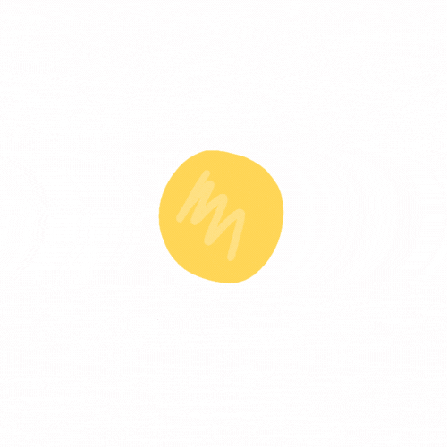
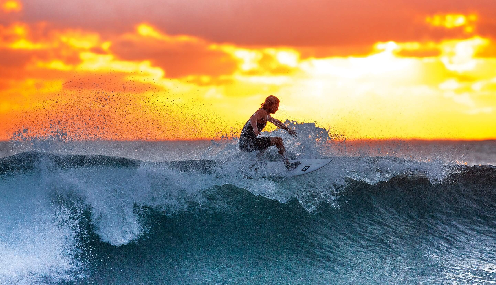

We are a welcoming, all-level surf school and surf camp located in Marmite, a laid-back surf destination
hidden just 20 minutes up the coast from Gold Coast. Our mission is to offer genuine and unforgettable
surf vacations in Australia. We made a conscious choice to keep everything as small as possible from the
beginning—smaller groups, smaller teacher-to-student ratios, and a smaller crew. This, in our opinion,
enables us to provide a more individualised surf experience, allowing for greater flexibility and
customization of your demands.
Join us! Explore our stunning coastline and all of its surf spots for a week while taking in the warm
Australian culture and, most importantly, catching some spectacular waves. All levels of surfers can
take advantage of our all-inclusive surf school packages; all you have to do is book your airfare and
we'll take care of the rest!
WHAT'S SO SPECIAL AT WAVY WAKE?
We are a dedicated, skilled, and small team of surfers. Our goal is to deliver quality service over
quantity, thus we keep our surf lessons small, with a maximum of 5 pupils to 1 teacher. We think that
this enables more focus, individualised feedback, and surfing advancement.
Since our surf camp is more intimate, we can be more adaptable and guarantee that no two days will be
alike. We choose the finest surf place of the day for your skill level and surf the tides, including
sunrise and sunset sessions. Our aim is for you to get the most of your surfing experience.

THE SURF

Australia is famous for its reliable year-round swell, incredible waves, and welcoming surf
community. The coastline offers a variety of top-notch surfing locations, from sheltered
beach breaks to powerful point breaks, making it a must-visit surfing destination for
surfers of all skill levels. We are conveniently close to fifteen different surf places.
Expect to surf the tides and explore the shoreline. Finding the best waves of the day and
selecting the best surfing locations for the level of our pupils is our aim.